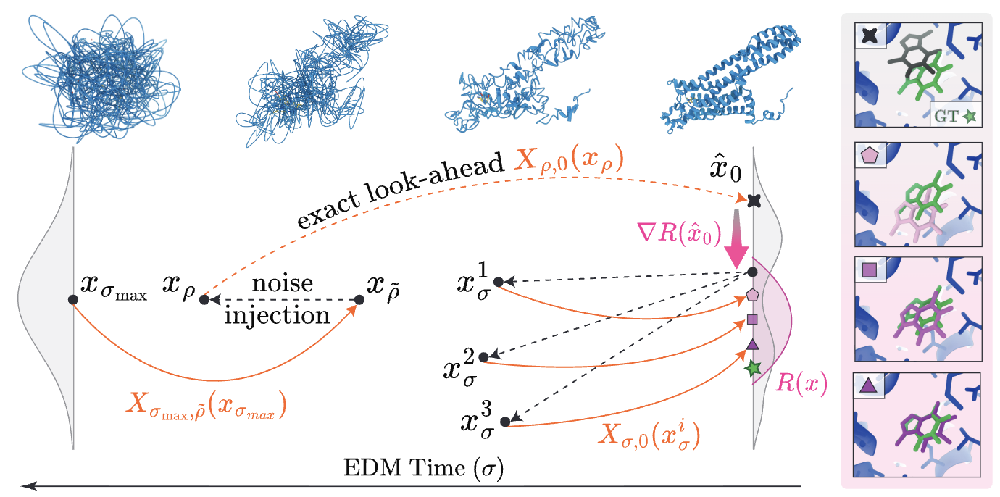

Ron Shprints
I'm a ML researcher working on drug discovery and molecular design. Generally, I'm interested in facilitating the process in which we simulate materials, probe their properties, test them in wet labs, and develop them into useful products.